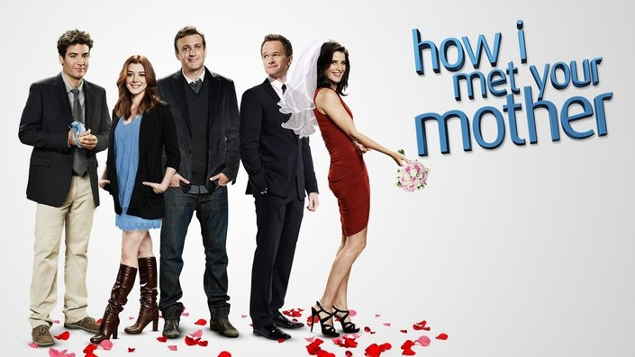
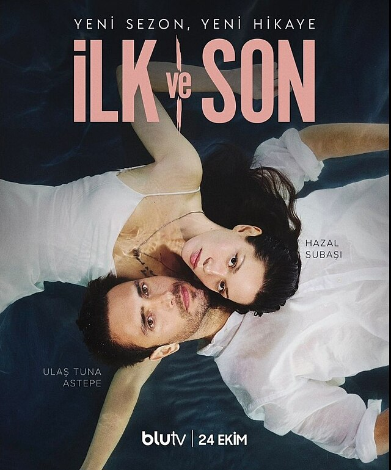
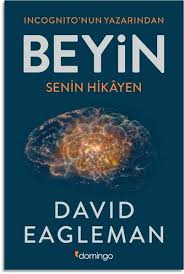

Sevdiğim Diziler
-
How I Met Your Mother
2005 yılında çekilen amerikan sitcom dizisidir.
Tekrar tekrar izlediğim ve her izlediğim de mutlu olduğum nadir dizilerdendir.

-
İlk Ve Son
Son zamanlar da sosyal medyada da popüler olan ve geçtiğimiz sene yeni sezonu çıkan romantik dram dizi ilişkilerinde birlerine zaraar veren çiftleri anlatıyor.

-
How I Met Your Mother
-
Sevdiğim kitaplar
-
Yaşam 3.0: Yapay Zeka Çağında İnsan Olmak
Max Tegmark tarafından yazılan ve yapay zeka konusunun yaşamımız üzerine etkisini detaylı bir şekilde inceleyen bir bilim kurgu rpmanıdır.

-
Beyin: Senin Hikayen
David Eagleman tarafından yazılan insan beyninin fonksiyonlarını ve beynimizin hayatımız üreinde ki etkilerini detaylı bir şekilde inceleyen bilimsel bir kitap.

-
Yaşam 3.0: Yapay Zeka Çağında İnsan Olmak
İlginiz için teşekkür ederim.